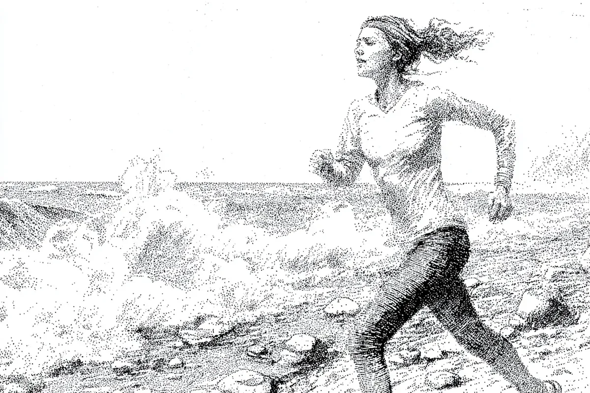

그녀는 어깨 너머로 바라보며 씩 웃었다. 세상이 그녀를 잡으려 해보라는 듯이.
[She looked over her shoulder, grinning, daring the world to try and catch her.]
그녀의 다리는 더 힘차게 움직였다. 모래가 그녀의 발꿈치 뒤로 덩어리져 튀었다. 종아리에 모래알이 따끔거리는 게 느껴졌지만, 상관없었다. 그 어느 것도 중요하지 않았다. 근육의 작열감, 폐의 조임—그런 것들은 분명 실재했지만, 그녀를 살아있다고 느끼게 해주었다.
[Her legs pumped harder. The sand sprayed out in clumps behind her heels. She could feel the grit sting against her calves, but it didn’t matter. None of it mattered. The burn in her muscles, the tightness in her lungs—those things were real, sure, but they made her feel alive.]
해변은 그녀가 앞으로 쏜살같이 달려나가자 흐릿해졌다. 그녀 자신도 그렇게 빨리 달릴 수 있으리라고는 생각지 못했다. 숨은 고르지 않았지만, 그녀의 왼쪽에서 부서지는 파도의 리듬과 일치했다. 들이쉬고 내쉬기를 반복했다. 부서지고 밀려나기를 반복했다. 마치 바다가 그녀를 따라잡으려 애쓰는 것 같았지만, 그녀는 계속 이겨냈고, 매번 조금씩 더 앞서 나갔다.
[The shoreline blurred as she shot forward, faster than she thought she could go. Her breath was uneven, but it matched the rhythm of the waves crashing to her left. In and out. Crash and pull. It felt like the ocean was trying to keep up with her, but she kept winning, pushing just a little further ahead each time.]
그녀의 웃음은 빠르고 거친 숨결처럼 터져 나왔다. 마치 누군가에게서 훔쳐온 것처럼. 그 순간 그녀는 걸려 넘어졌다.
[Her laugh came out in quick, harsh bursts, like she’d stolen it from someone else. That’s when she tripped.]
그녀는 모래에 반쯤 묻힌 바위를 보지 못했다. 그것이 그녀의 발을 걸어 넘어뜨릴 때까지 느끼지도 못했다. 한 순간 그녀는 자유롭고 무중력 상태였다가, 그 다음 순간 모래 위로 쿵 하고 내동댕이쳐졌다. 충격은 둔탁했지만 숨이 멎을 만큼 세게 느껴졌다.
[She didn’t see the rock buried half in the sand, didn’t feel it until it had hooked her foot. One moment she was free, weightless, the next she was slamming into the sand, the impact dull but hard enough to knock the air out of her.]
몇 초 동안, 그녀는 그저 그 자리에 얼굴을 묻고 누워, 세상이 빙글빙글 도는 것을 느꼈다. 입안에서는 피 맛이 날카롭게 느껴졌다. 아마 입술을 깨물었나 보다. 하지만 그녀의 미소는 사라지지 않았다. 오히려 더 커졌다.
[For a few seconds, she just lay there, face down, feeling the world spin. Blood tasted sharp in her mouth—she must’ve bit her lip—but her grin hadn’t faded. If anything, it widened.]
그녀는 몸을 뒤로 젖혀 하늘을 올려다보았다. 하늘은 너무 크고 밝아 보였지만, 그녀는 신경 쓰지 않았다. 그녀는 다시 한번 웃음을 터뜨렸고, 이번에는 좀 더 부드러웠다. 마치 공기마저 빨려나간 것처럼.
[She rolled onto her back, blinking up at the sky. It seemed too big, too bright, but she didn’t mind. Her chest heaved as she laughed again, this time softer, like the air had been sucked out of her, too.]
잠시 시간이 흘렀다. 또 다른 순간이 지나갔다. 그녀는 무슨 일이 일어날지 알고 있었다.
[A moment passed. Another. She knew what was coming.]
웃음 뒤로, 다른 무언가가 살금살금 기어들어 왔다. 그녀는 그것을 멀리 떨쳐냈다고 생각했지만, 그것은 오래된 멍의 둔한 아픔처럼 그 자리에 있었다. 그녀는 옆구리에 손을 대고 흉터를 더듬었다. 지금쯤이면 사라졌어야 할 흉터였지만, 사라지지 않았다. 그런 것들은 오래 남는다. 기억처럼, 고통처럼. 실수처럼.
[Behind the laughter, a flicker of something else crept in. She thought she’d left it far behind, but there it was, like the dull ache of an old bruise. She pressed her hand to her side, feeling for the scar that should have faded by now but hadn’t. That kind of thing sticks around. Like memories, like pain. Like mistakes.]
그녀는 천천히 몸을 일으켰다. 모래가 피부에 달라붙었다. 다리는 여전히 튼튼했지만, 아주 미세하게 떨렸다. 그녀는 손등으로 입술의 피를 닦아내고 길게 한숨을 내쉬었다.
[She sat up slowly, sand clinging to her skin. Her legs still felt strong, but they trembled, ever so slightly. She wiped at the blood on her lip with the back of her hand and let out a long breath.]
여기에는 아무도 없었다. 단 한 사람도. 그것이 가장 좋은 점이었다. 그것은 그녀가 계속 달리고, 계속 움직일 수 있으며, 아무도 그녀를 막을 수 없다는 것을 의미했다.
[There was no one here. Not a soul. That was the best part. It meant she could keep running, keep moving, and no one would stop her.]
하지만 그때, 작고 희미하지만 그녀를 얼어붙게 만들기에 충분한 소리가 들렸다. 그녀는 모래언덕 쪽으로 고개를 돌렸다. 심장이 조금 전보다 더 크게 뛰었다.
[But then there was a sound—small, distant, but enough to make her freeze. She turned her head toward the dunes, heart thudding a little louder than before.]
소리는 사그라들었다. 아마도 바람일 거야. 아마도.
[The sound faded. Probably just the wind. Probably]
그녀는 그것을 떨쳐내고 일어섰다. 몸은 넘어진 탓에 아파서 불평했지만, 그녀는 신경 쓰지 않았다. 근육은 치유될 것이다. 멍도 마찬가지다. 그것들이 그녀를 멈추게 할 순 없었다.
[She shook it off, pushing to her feet. Her body complained, sore from the fall, but she didn’t care. The muscles would heal. The bruises too. She couldn’t let them stop her.]
그녀는 다시 전력 질주를 시작했다. 입술의 따가움과 넘어진 탓에 약간 욱신거리는 발목을 무시한 채. 발 밑의 모래는 흔들렸지만, 그녀는 다시 리듬을 찾았다. 이번엔 조금 더 느리고, 조금 더 조심스럽게.
[She broke into a sprint again, ignoring the sting in her lip, the way her ankle throbbed slightly from the trip. The sand shifted beneath her feet, but she found her rhythm again, a little slower, a little more careful this time.]
그녀의 마음은 최선을 다해 노력했음에도 불구하고, 또 다른 달리기를 떠올렸다. 모래가 없었던 곳. 단단하고 차가운 땅만 있었던 곳. 다른 종류의 웃음소리. 다른 사람의 웃음소리. 더 크고, 더 거친. 주먹과 함께, 그리고 더 나쁜 것들과 함께 오는 그런 종류의 웃음.
[Her mind drifted back, despite her best efforts, to another run. One where there hadn’t been any sand. Just the hard, cold ground. A different kind of laughter. Someone else’s. Louder, rougher. The kind that came with fists, and worse.]
그녀는 고개를 저으며 현재에, 모래에, 바다에 집중했다. 그녀의 발걸음은 다시 안정되었다. 더 강해졌다. 그녀는 여기에 있었다. 거기가 아니라.
[She shook her head, focusing on the present, on the sand, on the sea. Her footfalls were steady again. Stronger. She was here. Not there.]
그래도, 그 웃음소리. 그것은 그녀에게 계속 남아있었다.
[Still, that laugh. It stuck with her.]
그녀는 더 빠르게 앞으로 내달렸다. 마치 그 기억을 따돌릴 수 있다는 듯이, 충분히 열심히 달리면 그 기억이 사라질 것처럼. 그녀는 바다의 리듬이 자신을 이끌도록 내버려 두었고, 바람이 그녀를 앞으로 끌어당기도록 했다. 한 걸음 한 걸음이 그녀를 더 멀리, 모든 것으로부터 더 멀리 데려갔고, 그리고 더 가까이—무엇에? 그녀는 알지 못했다. 그건 중요하지 않았다. 중요한 건 계속 달리는 것이었다.
[She shot forward, faster now, like she could outrun the memory, make it disappear if she went hard enough. She let the ocean’s rhythm carry her, let the wind pull her forward. Each step took her farther away, farther from everything, and closer to—what? She didn’t know. It didn’t matter. The point was to keep running.]
그녀에겐 목적지가 필요 없었다.
[She didn’t need a destination.]
지금은 그저 바람이 얼굴을 스치고 지나가는 느낌, 발 아래의 모래를 느끼는 것만으로도 충분했다.
[For now, it was enough just to feel the wind whip past her face, the sand beneath her feet.]